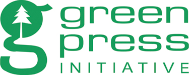

Environmental Benefits Statement
The World Bank Group is committed to reducing its environmental footprint. In support of this commitment, the Publishing and Knowledge Division leverages electronic publishing options and print-on-demand technology, which is located in regional hubs worldwide. Together, these initiatives enable print runs to be lowered and shipping distances decreased, resulting in reduced paper consumption, chemical use, greenhouse gas emissions, and waste.
The Publishing and Knowledge Division follows the recommended standards for paper use set by the Green Press Initiative. Whenever possible, books are printed on 50 percent to 100 percent postconsumer recycled paper, and at least 50 percent of the fiber in our book paper is either unbleached or bleached using Totally Chlorine Free (TCF), Processed Chlorine Free (PCF), or Enhanced Elemental Chlorine Free (EECF) processes.
More information about the Bank’s environmental philosophy can be found at http://crinfo.worldbank.org/wbcrinfo/node/4.
